Santo Tomé: a benefits web app, from design to launch and measurement
A mobile-first web app for the Santo Tomé Commercial and Industrial Center: merchants upload their benefits and locals find them from their phone, with nothing to install. I did the whole route: product, development, launch, communication and measurement.
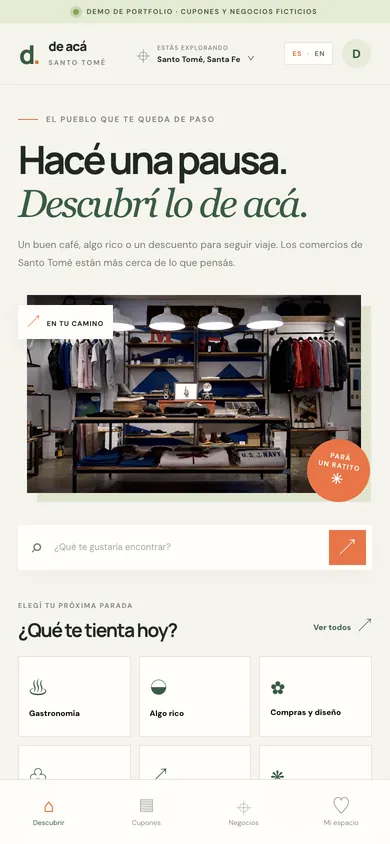
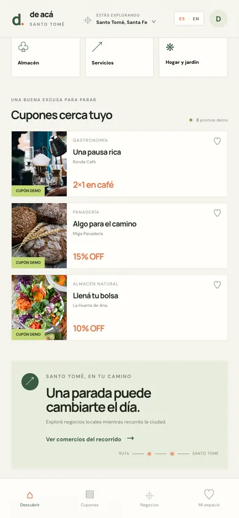
Swipe sideways or use the arrows. Tap a screenshot to enlarge it.
Demo with fictional merchants.
The product
The Santo Tomé Commercial and Industrial Center needed a platform where merchants could upload benefits and locals could find them from their phone. I designed the product and built it on WordPress, with two custom PHP plugins: one for merchants (3 shortcodes) and one for benefits, with an admin dashboard and AJAX.
- Search and categories that filter on their own, to reach a store or a category in one tap.
- Benefits inside each merchant, with more context for the viewer.
- Automatic statuses: pending if it hasn't started yet, approved if it's running and ended once the date has passed. A semi-automatic system detects and filters incorrectly entered benefits.
- An events tab, with current and past events, and a news section.
- Truly mobile-first: anyone who visits from a computer is redirected to the phone.
The launch: classic marketing for a small city
Santo Tomé is a small city, not well prepared for digital campaigns: people look at flyers and posters and listen to the radio. That is why I did classic marketing. Travelers find out on the road, through a billboard.
To reach residents
- Posters and flyers around the city, with the web app's QR code.
- Radio, to reach people who don't look at screens.
- A billboard on the road, for the travelers passing through.
- A tote bag with the brand of the Commercial and Industrial Center and the web app.
- An institutional video designed for WhatsApp and a printable QR.
- The marathon: printable material by stage and a web app poster.
With the merchants who have already joined
- A flyer with a personalized QR for each merchant, with their information properly loaded, and an individual Instagram post for each one.
- Call-for-submissions material to upload benefits.
- A WhatsApp group with daily news and support.
- An email so they could review their photos and profiles.
The result: about 60 merchants uploaded.
The materials
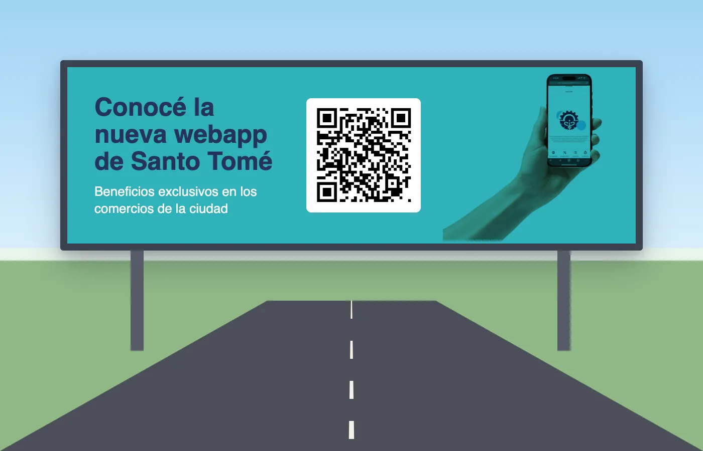
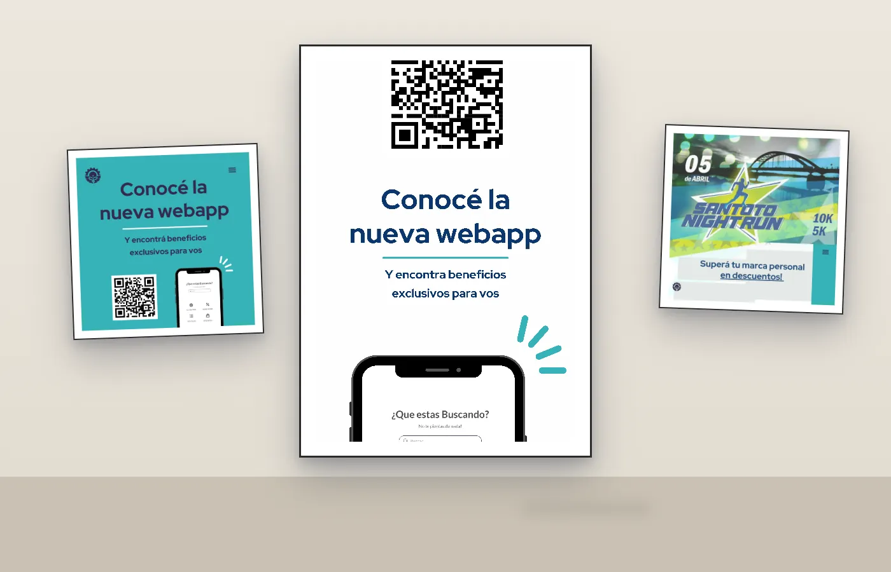
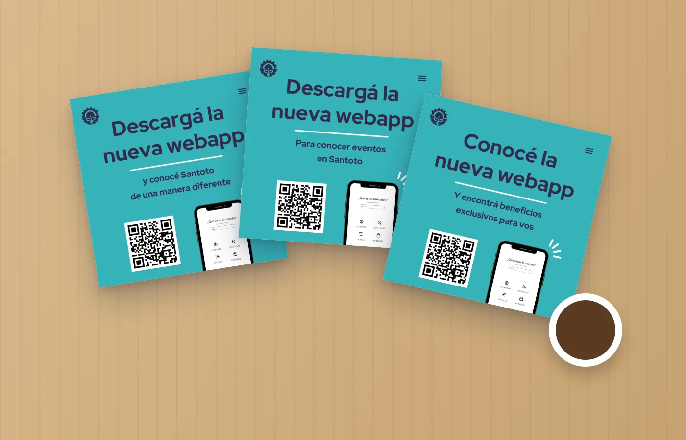
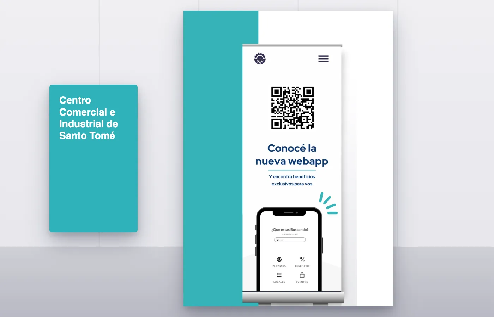
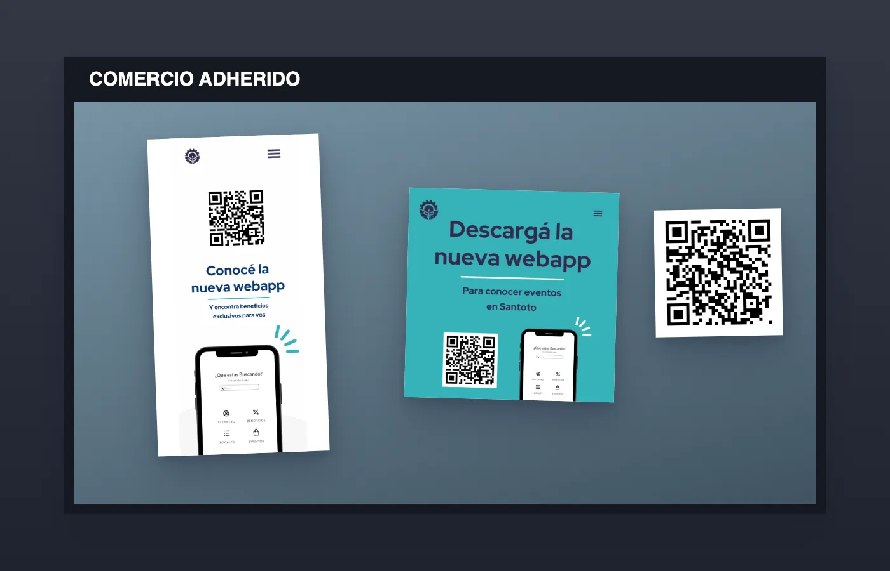
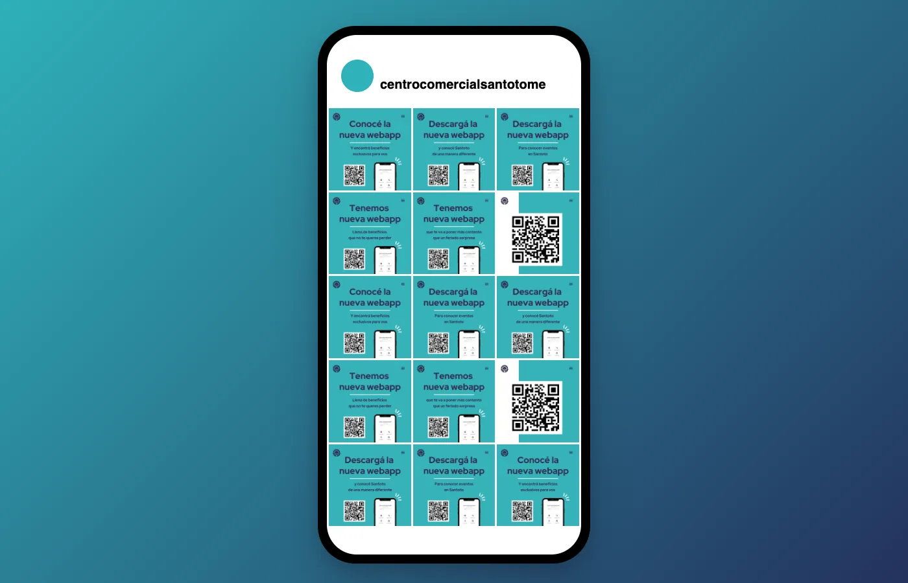
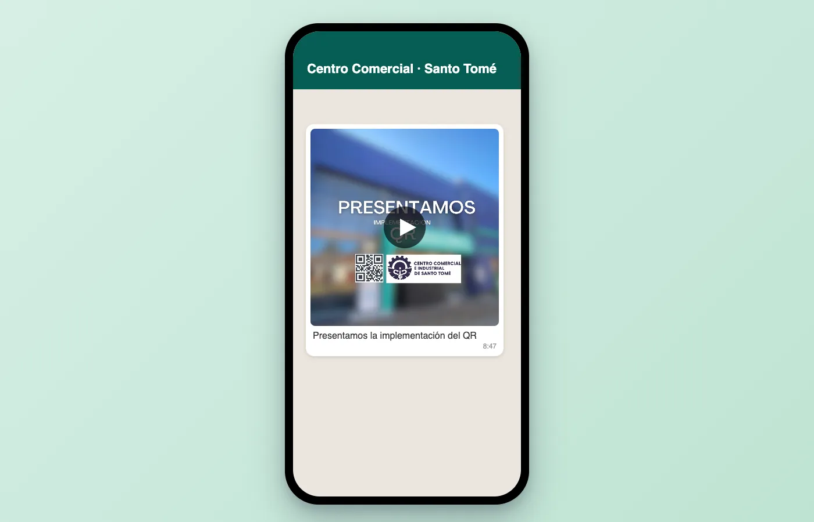
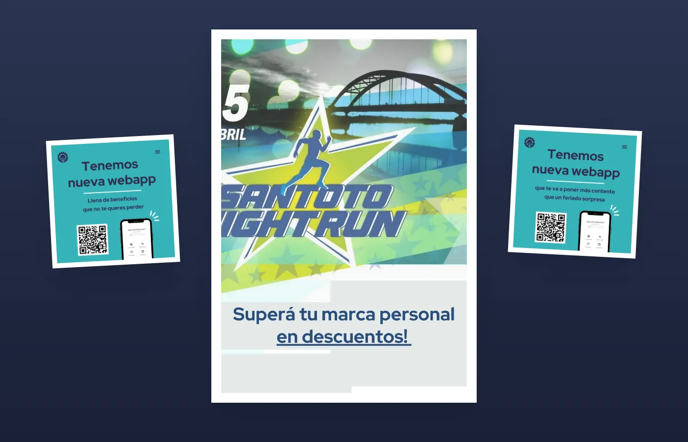
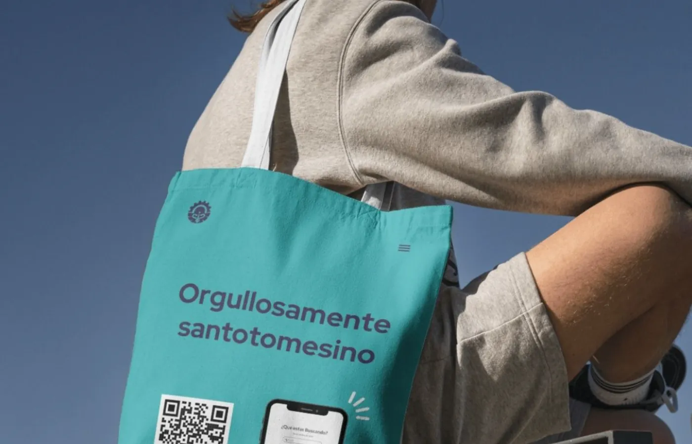
Swipe sideways or use the arrows. Tap a screenshot to enlarge it.
Measurements inside the web app
The web app measures with GA4 and Microsoft Clarity, and I delivered to the Commercial and Industrial Center reports with active and new users, retention since launch day and interactions by section. “News” was the section with the most activity. In the mobile PageSpeed report: accessibility 97, best practices 96 and SEO 92.